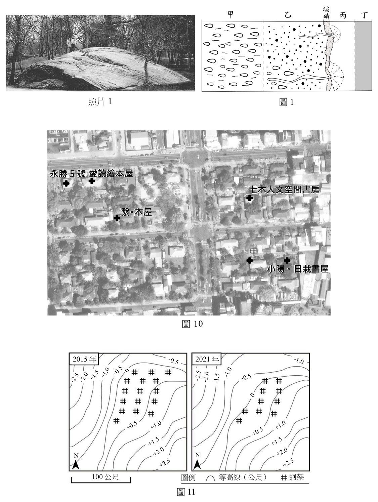
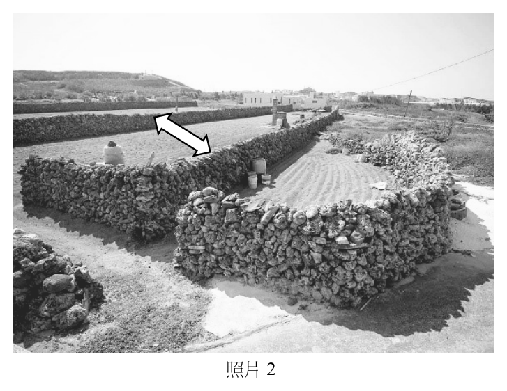
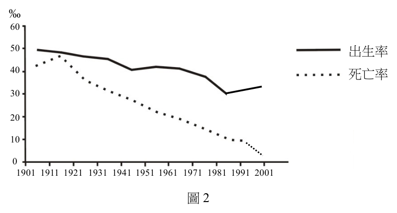
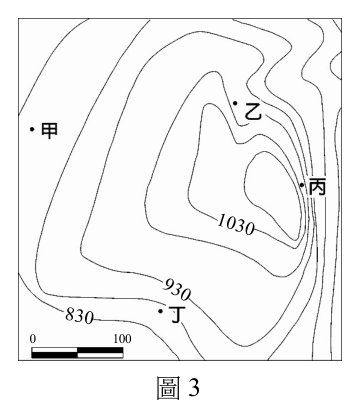
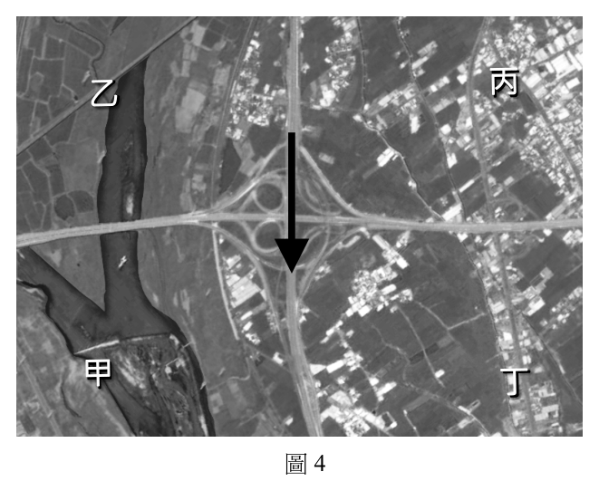
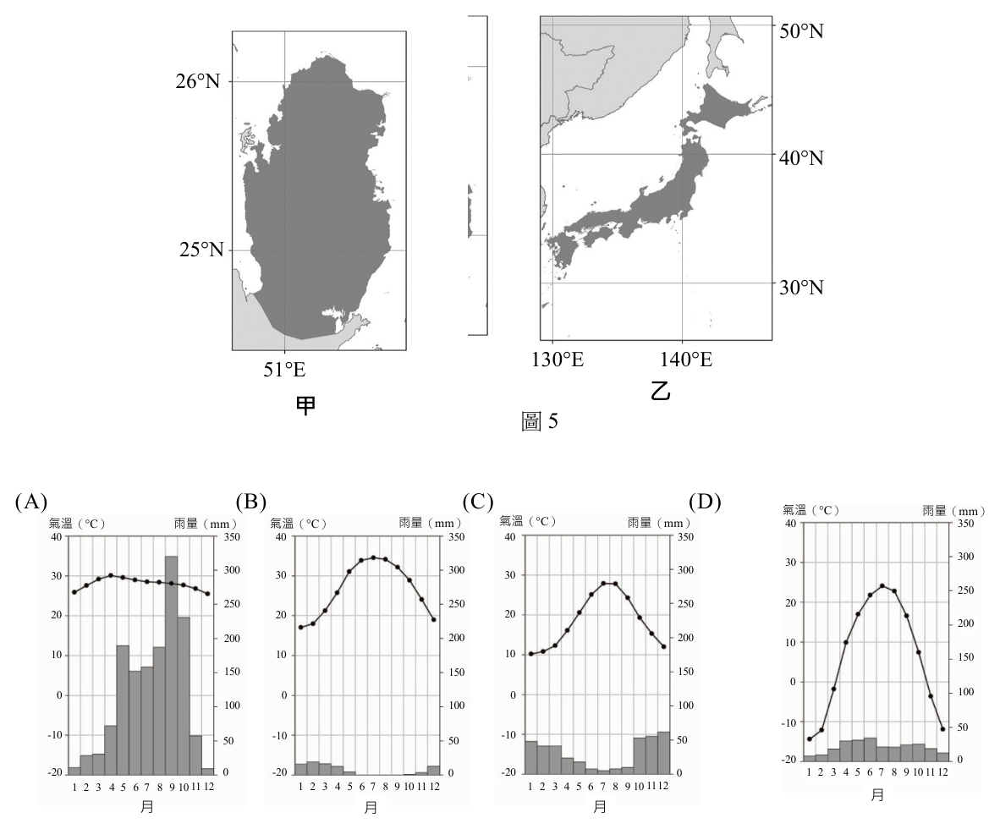
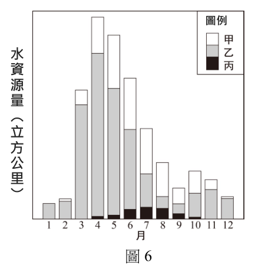
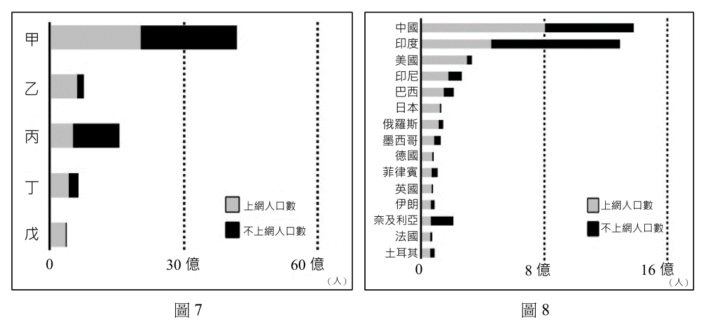
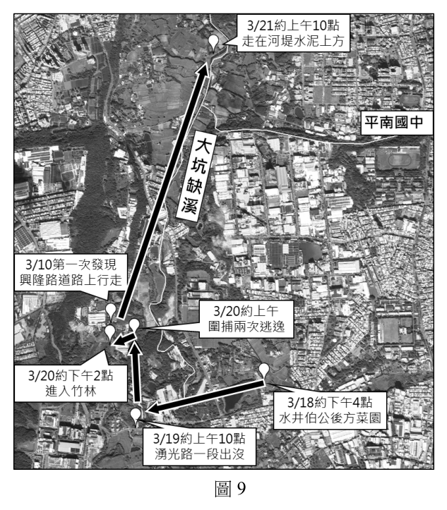

112 年分科測驗地理試題與答案
這一頁是民國 112 年分科測驗地理的整份歷屆試題，共 45 題，題目與標準答案出自大考中心 分科測驗歷年試題（依著作權法 §9，考試試題不受著作權保護），其中 45 題附有詳解。以下逐題列出題幹、選項與答案；要計時作答或記錄成績，請用線上練習。
大學入學考試中心原始場次代碼：分科地理
線上作答這一科 →
全部 45 題
第 1 題
下列哪個地區位於南島語族分布範圍之外?
- （A）澳洲大陸
- （B）紐西蘭南島
- （C）馬達加斯加
- （D）美國夏威夷島
答案：（A）
詳解與考點
正解：本題問的是南島語族的分布邊界。其主要範圍從臺灣、東南亞島嶼延伸到太平洋諸島，西端可達馬達加斯加；澳洲大陸不在這條主要分布帶內，故選 A。
B：紐西蘭南島有毛利人的活動與聚落，毛利語屬南島語族的玻里尼西亞語支，仍在分布範圍內。
C：馬達加斯加位於非洲東側，但馬達加斯加語屬南島語族，是南島語族跨越印度洋擴散的重要例證。
D：夏威夷群島的夏威夷語屬玻里尼西亞語支，該語支屬南島語族，並非範圍之外。
本題考點：南島語族（Austronesian languages）——判斷分布時記住其核心由臺灣向島嶼東南亞與太平洋擴散，並延伸至馬達加斯加；語言地理分布（linguistic distribution）——地理位置遠離核心不等於不屬同一語族，應以語系歸屬而非洲別判斷。
第 2 題
阿納德爾港(64.8°N,177.6°E),全年大部分時間浮冰覆蓋,8 ~ 9 月間可通航,近年來
因天然氣開發,經濟快速成長;博多港(67.3°N,14.4°E)可全年通航,主要出口貨物
為魚、魚粉及青魚油等,進口貨物有煤、鹽及石油等。博多港的通航期比阿納德爾港來
得長,主要是受到下列哪項因素的影響?
- （A）進出口貨物類別
- （B）位於陸塊東西岸
- （C）鄰近海域日照量
- （D）鄰近海域降水量
答案：（B）
詳解與考點
正解：判準不是兩港緯度高低，而是兩者分居歐亞大陸的東、西岸。博多港位於西岸，受北大西洋暖流系統影響，海水較不易長期結冰；阿納德爾港位於東岸的高緯寒冷海域，浮冰期較長，故選 B。
A：港口的進出口貨物會影響運輸需求，卻不能決定鄰近海域是否結冰與通航期長短。
C：博多港的緯度還略高於阿納德爾港，若只以日照量判斷，無法解釋它反而全年可通航；分辨關鍵在海水溫度與洋流。
D：降水量主要反映水氣條件，並非控制高緯港灣浮冰持續時間的主要因素。
本題考點：洋流（ocean currents）——同緯度附近的港口通航期不同時，先判斷暖流或寒流對海水溫度的影響；海冰（sea ice）——高緯港口是否結冰受海水熱量與洋流控制，不能僅由貨物或降水推論。
第 3 題
某市市長擬利用空間資訊科技推動智慧城市相關基礎建設,指示各單位提出建設方案。
下列哪些方案最可能被該市長採用?
甲、提供路邊車格即時資訊 乙、建置空氣品質預警通知
丙、進行生醫產業園區選址 丁、提供公車到站即時資訊
戊、規劃長照服務人力培訓
- （A）甲乙丙
- （B）甲乙丁
- （C）乙丙丁
- （D）丙丁戊
答案：（B）
詳解與考點
正解：本題問的是把即時位置或監測資料轉成都市服務的空間資訊科技。（甲）提供路邊車格即時資訊、（乙）建置空氣品質預警通知與（丁）提供公車到站即時資訊，都要整合位置、感測或定位資料，最符合智慧城市的即時基礎服務，故選 B。
A：此組雖包含（甲）與（乙），但（丙）進行生醫產業園區選址屬長期土地利用規劃；它可以使用地理資訊系統，卻不如（丁）具有即時服務市民的基礎建設性質。
C：此組的（乙）與（丁）符合即時空間服務，但漏掉同樣依賴車格位置與狀態資料的（甲），並納入較偏長期規劃的（丙）。
D：（丙）與（戊）規劃長照服務人力培訓都偏向選址或人力政策，不能取代（甲）與（乙）這類直接使用即時空間資料的服務。
本題考點：地理資訊系統（GIS）——空間資料可整合位置、屬性與時間資訊以支援決策；即時空間服務（real-time location-based service）——停車、公車與環境預警要靠持續更新的位置或感測資料。
第 4 題
紐約中央公園有類似照片1 中的地形,成為重要的觀光休閒景點,該地形具有一側平緩
光滑,一側崎嶇陡峭的地形特徵。圖1 為冰河地形分布示意圖,照片1 中的地形最可能
分布於圖1 中的何處?
端
甲 乙 磧 丙 丁
照片1 圖1

- （A）甲
- （B）乙
- （C）丙
- （D）丁
答案：（A）
詳解與考點
正解：照片所述「一側平緩光滑，一側崎嶇陡峭」是羊背石的典型冰河侵蝕組合：迎冰側受磨蝕而平滑，背冰側因拔蝕而陡峭。羊背石形成於基岩受冰河侵蝕較強的區段，題圖中符合此判準的位置為（A）甲，故選 A。
B：乙不符合羊背石以基岩磨蝕與拔蝕共同形成的條件。分辨關鍵在侵蝕面的不對稱，不是只看地形位於冰河分布區內。
C：丙若對應冰河搬運後的堆積區，則其地形由冰磧物或冰水沉積物形成，不能產生羊背石的平滑迎冰面與陡峭背冰面。
D：丁同樣不是依不對稱基岩侵蝕面辨認羊背石的位置；把冰河末端附近的堆積地形當作羊背石，混淆了侵蝕地形與堆積地形。
本題考點：羊背石（roche moutonnée）——看到同一基岩丘一側平滑、另一側陡峭破碎時，以冰河迎側磨蝕與背側拔蝕判定；冰河地形分類（glacial landforms）——先分清基岩侵蝕形成與冰磧物堆積形成，再定位到冰河作用帶。
第 5 題
紐西蘭奧克蘭市於2023 年1 月27 日單日降下249 毫米的雨量,是夏季總雨量的70%,
造成洪水與土石流災害,機場成為水塘,道路水深及臀。若2023 年紐西蘭年降水量不
變的假設下,下列哪個現象最可能是在當年度此事件後所造成的改變?
- （A）年逕流量減少
- （B）洪水發生機率減少
- （C）年降雨變率增加
- （D）可利用水資源增加
答案：（B）
詳解與考點
正解：本題以年降水量不變為前提，且單日暴雨已占夏季總雨量約 70%。在這個簡化的總量約束下，同年度剩餘期間可再分配的雨量較少，後續再發生洪水的機率因而下降，故選 B。
A：降雨集中在短時間內會提高地表快速逕流與淹水風險，不能由此推得年逕流量減少。
C：年降雨變率是比較不同年度降水量的變動程度；單一年度的一次暴雨與年降水量不變的假設，不能直接證明年際變率增加。
D：暴雨多以快速逕流形式流失，還可能造成污染或災害；降雨集中不等於可穩定利用的水資源增加。
本題考點：水文收支（water budget）——在總降水量固定的題設下，某時段雨量增加會壓縮其他時段可分配的雨量；降雨強度與逕流（rainfall intensity and runoff）——相同總雨量若集中降下，通常較容易形成快速逕流與洪水。
第 6 題
微軟創辦人比爾‧蓋茲2019 年開始投資臺灣地熱能源的開發,下列哪項是臺灣具有地
熱能源開發潛力最可能的原因?
- （A）臺灣位處板塊接觸帶
- （B）臺灣已經大量使用地熱能源
- （C）臺灣地熱集中於西部平原開發便利
- （D）臺灣是全球地熱蘊藏最豐富的國家
答案：（A）
詳解與考點
正解：臺灣位於板塊接觸帶，地殼活動可提供較高的地下熱源，斷層與裂隙也有利地下水循環並帶出熱能，因此具有地熱開發潛力，故選 A。
B：是否已大量使用地熱能源是開發成果，不是判斷地下熱能潛力的地質原因。
C：地熱資源通常與火山活動、斷層及地殼熱流較活躍的地帶相關，不能以西部平原開發便利概括其分布。
D：全球地熱蘊藏量的比較需要完整資料；題文沒有提供臺灣為全球最豐富國家的依據，且此敘述也不是形成潛力的機制。
本題考點：地熱能（geothermal energy）——判斷潛力時看地下熱源、地質構造與熱水循環；板塊構造（plate tectonics）——板塊交界常伴隨火山、斷層與較高地熱活動，是地熱資源的重要線索。
第 7 題
澎湖的農業景觀深受當地盛行風的影響,照片2 是澎湖的菜宅(即農田)景觀,照片2
中的箭頭最可能是哪個方位?
照片2

- （A）東←→西
- （B）南←→北
- （C）東北←→西南
- （D）東南←→西北
答案：（C）
詳解與考點
正解：澎湖冬半年受東北季風影響顯著，菜宅以石牆保護作物，正反映農業景觀對強勁東北風的調適。東北風由東北吹向西南，照片中的箭頭所示方向應為東北—西南，故選 C。
A：東西向不能表現澎湖主要盛行的東北風方向；把風向只化為經線或緯線方向，會忽略東北季風的斜向特徵。
B：南北向同樣不是東北風的來向與去向連線，無法解釋菜宅防風設計所面對的主要風力。
D：東南—西北對應的是另一組斜向，與東北季風相反；分辨風向時要先以「風從哪裡來」判定，再連到其吹往的相反方位。
本題考點：季風（monsoon）——判讀地方農業景觀時，先連結該地盛行風的來向、季節與強度；風向表示法（wind direction）——風名取自來向，東北風的移動方向為東北至西南，不能把來向與去向視為不同風種。
第 9 題
該國哪個時期開始邁入人口轉型模式的早期擴張階段?

- （A）1901 ~ 1911
- （B）1911 ~ 1921
- （C）1931 ~ 1941
- （D）1951 ~ 1961
答案：（B）
詳解與考點
正解：人口轉型的早期擴張階段，關鍵是死亡率先因衛生、醫療與生活條件改善而下降，出生率仍維持偏高，因此兩條曲線的差距開始擴大。圖中首次出現這種死亡率下滑而出生率尚高的時段為1911～1921年，故選 B。
A：1901～1911年仍是出生率與死亡率都高、自然增加率較低的型態，尚未看出早期擴張所需的死亡率明顯下降。
C：1931～1941年已不是「開始」進入的時點。即使仍有自然增加，題目問的是兩率差距最初拉開的轉折。
D：1951～1961年屬於較後續的階段，不能以後來的曲線狀態取代早期擴張的起始判斷。
本題考點：人口轉型模式（demographic transition model）——出生率高而死亡率先降時，判為早期擴張；曲線轉折判讀（trend break）——題目問「開始」時，找第一個符合機制的區間，不以差距最大的後續區間作答。
第 10 題
從1970 ~ 2000 年之間,該國最可能出現下列哪種社會現象?
- （A）扶幼比低
- （B）扶養比高
- （C）勞動力不足
- （D）人口紅利小
請記得在答題卷簽名欄位以正楷簽全名共 11 頁 地理考科
答案：（B）
詳解與考點
正解：出生與死亡率的長期變化會累積成特定年齡結構；大量非工作年齡人口須由工作年齡人口負擔時，整體扶養比會升高。本題應以總扶養負擔判讀，故選 B。
A：扶幼比只看幼年人口與工作年齡人口的比值，不能代表包含老年人口在內的整體扶養比；即使扶幼比下降，老年扶養仍可能使總扶養比偏高。
C：勞動力是否不足還取決於勞動參與率、產業需求與移入人口，不能只由出生率與死亡率曲線直接判定。
D：人口紅利要看工作年齡人口占比是否相對提高；不能把人口成長速度本身直接等同於人口紅利大小。
本題考點：扶養比（dependency ratio）——分子是幼年與老年人口，分母是工作年齡人口，先分清是總扶養比或扶幼比；人口轉型（demographic transition）——由出生、死亡率的時間差推估後續年齡結構，而非只看某一年的總人口數；人口紅利（demographic dividend）——工作年齡人口占比提高才可能出現，須與扶養比一起判讀。
第 11 題
該作家所描寫的地區,最可能是下列何者?
- （A）蘭嶼
- （B）綠島
- （C）澎湖
- （D）琉球嶼
答案：（A）
詳解與考點
正解：關鍵在共同情境明示「雅美族」及祖先傳統的 Mataw 船隊，這些海洋文化線索指向居住於蘭嶼的達悟族，故選 A。
B：綠島雖同為離島，也具有海洋活動，但不是雅美族／達悟族傳統船隊文化的主要所在地。
C：澎湖的島嶼生活與漁業發達，材料卻以特定原住民族名稱和祖先船隊辨識地方，不能僅以「海上」推到澎湖。
D：琉球嶼位於屏東外海，與材料所指的雅美族／達悟族文化地景不符。
本題考點：文化地景（cultural landscape）——從族名、儀式與船隊等具體文化符號交叉定位地方，不能只看島嶼或海洋等泛用景觀；蘭嶼（Lanyu）——看到達悟族或舊稱雅美族的海洋文化脈絡時，可優先判向蘭嶼。
第 12 題
該作家所描述的內容,最符合下列哪個地理概念?
- （A）地方感
- （B）環境變遷
- （C）區域專業化
- （D）全球在地化
答案：（A）
詳解與考點
正解：本題問的是人與地方之間的主觀感受。共同情境寫到作者在海上因船隊、笑容與祖先傳統而產生認同和感動，呈現的是對地方的情感連結與身分認同，故選 A。
B：環境變遷著重自然或人文環境隨時間發生的改變，材料沒有描述前後環境條件的變化。
C：區域專業化指某地集中發展特定產業或功能，材料談的是個人感受與文化經驗，並非經濟活動分工。
D：全球在地化要辨認全球力量與在地文化彼此調適的過程；此處未出現跨國流動或全球市場的線索，不能把城市生活與在地情感的對照直接等同全球在地化。
本題考點：地方感（sense of place）——材料若呈現個人對特定地方的認同、記憶與情感連結，優先以地方感判斷；區域專業化（regional specialization）——只有出現生產、服務或功能集中時，才用產業分工概念解讀。
第 13 題
許多難民經由地中海進入希臘成功尋求政治庇護後,即可自由移動至其他大部分歐洲
國家,此現象是根據下列哪項協議?
- （A）申根公約
- （B）邊界合作區
- （C）馬斯垂克條約
- （D）歐洲煤鋼共同體條約
答案：（A）
詳解與考點
正解：關鍵詞是「自由移動至其他大部分歐洲國家」。申根公約建立參與國間的無內部邊境管制安排，正是題幹所描述的跨國自由移動制度基礎，故選 A。
B：邊界合作區不是用來建立歐洲多國自由移動權的協議名稱，不能解釋題幹的制度效果。
C：馬斯垂克條約促成歐洲整合與歐盟體制，但題幹所問的具體邊境自由移動安排是申根公約。
D：歐洲煤鋼共同體條約以煤、鋼產業合作為核心，與人員跨越多國內部邊界的規範不同。
本題考點：申根公約（Schengen Agreement）——看到參與國間取消或弱化內部邊境管制、方便跨國移動時，優先連結申根制度；歐洲整合（European integration）——先分辨題目問的是產業合作、歐盟政治體制或邊境通行，三者對應的協議不同。
第 14 題
歐盟執行委員會因應難民危機,研擬由成員國攤派接納一定配額難民,此一法案通過
後,下列哪些國家需遵守此規定?
甲、瑞士 乙、挪威 丙、德國 丁、西班牙 戊、斯洛伐克
- （A）甲乙丙
- （B）甲丁戊
- （C）乙丙丁
- （D）丙丁戊
答案：（D）
詳解與考點
正解：判準在「歐盟執行委員會」提出且由「成員國」分攤配額，適用對象應是歐盟會員國。德國、西班牙與斯洛伐克都是歐盟會員，瑞士與挪威雖參與部分歐洲合作機制，卻非歐盟會員，故選 D。
A：甲乙丙包含瑞士與挪威兩個非歐盟會員，也漏掉同為會員的西班牙與斯洛伐克。將申根參與國當作歐盟會員，是本題最強的混淆點。
B：甲丁戊中的瑞士非歐盟會員；即使西班牙與斯洛伐克符合，整組仍不成立。
C：乙丙丁中的挪威非歐盟會員，且未納入斯洛伐克，不能作為完整適用名單。
本題考點：歐盟會員國（European Union member state）——歐盟機構作成並要求會員遵守的規範，先以是否為歐盟會員判斷適用範圍；申根區（Schengen Area）——申根參與與歐盟會員資格並不完全重合，遇到兩者並列時不可互相替代。
第 15 題
若圖3 為等高線地形圖,高度單位和比例尺單位均為公尺,
圖3 中乙處,最可能為下列哪種地形?

- （A）山峰
- （B）稜線
- （C）鞍部
- （D）谷地
0 100
圖3
答案：（D）
詳解與考點
正解：等高線穿越谷地時會向較高處凹入，常形成尖端指向上游的 V 字形；水流沿坡向由高處流往低處。本題以此規則判定乙為谷地，故選 D。
A：山峰應由閉合等高線環繞，且高度往中心增加，不以單一 V 字彎折為主要特徵。
B：稜線的等高線也可能彎曲，但尖端指向較低處，與谷地的上游指向相反。
C：鞍部位於兩個較高地形之間的低凹處，等高線呈兩側收束的形態，不能只用谷地的 V 字規則判定。
本題考點：等高線地形判讀（contour interpretation）——先找等高線尖端方向，尖端指向高處為谷地、指向低處為稜線；坡向與水流——水流垂直等高線並往低處，適合用來交叉檢查谷地判讀。
第 16 題
若圖3 為等雨量線圖,雨量單位為mm,比例尺單位為公里。圖3 中甲乙丙丁四個地點,
哪個地點附近雨量的空間分布變化最大?
- （A）甲
- （B）乙
- （C）丙
- （D）丁
答案：（C）
詳解與考點
正解：等雨量線上各點雨量相同；相同的雨量差若在愈短的水平距離內完成，表示雨量梯度愈大。空間變化最大的位置依此判準為丙，故選 C。
A、B、D：三處都不是相同雨量差在最短距離內完成的位置；雖然仍有雨量變化，但空間梯度較小。
本題考點：等雨量線（isohyet）——比較空間變化時看相鄰線的數值差與線距，線愈密代表梯度愈大；地圖尺度——同一張圖要在相同尺度下比較線距，不能只看等雨量線的數量。
第 17 題
正北最接近圖4 中哪兩點連線所指的方向?

- （A）甲→丙
- （B）乙→丁
- （C）丙→甲
- （D）丁→乙
答案：（C）
詳解與考點
正解：方位角由正北起算並順時針增加，315° 表示北偏西 45°。將影像中箭頭提供的方位校正後，真正的正北最接近丙指向甲的連線，故選 C。
A：甲指向丙與丙指向甲互為反向；把 C 的方向倒轉後接近正南，不能作為正北。
B：乙指向丁未與校正後的南北軸重合，差別不在箭頭是否指向上方，而在方位角的基準是正北。
D：丁指向乙雖為 B 的反向，仍不是校正後的正北方向；兩者都不能因互為反向而自動成為南北軸。
本題考點：方位角（azimuth）——以正北為 0°，順時針量到 315° 即北偏西 45°；衛星影像定向——先用題給箭頭校正影像方位，再判讀圖上連線，不可預設畫面上方就是北方。
第 18 題
圖4 中的河流最可能為下列何者?
- （A）和平溪
- （B）大肚溪
- （C）卑南溪
- （D）秀姑巒溪
答案：（B）
詳解與考點
正解：題組先以方位角校正衛星影像，接著要把海岸走向、河口位置與周邊地形合併定位；符合該定位結果的是中部西岸的大肚溪，故選 B。
A：和平溪位於東北部至東部的山地海岸交界，區位與題組定位不符。
C：卑南溪流經臺東平原後注入太平洋，屬東南部河川。
D：秀姑巒溪位於花東縱谷以東，河口面向東部海岸，與大肚溪所在的西部河川環境不同。
本題考點：衛星影像定位（satellite-image geolocation）——先校正方位，再以河口、海岸走向與地形組合排除候選地；臺灣河川區位——辨識河流時先判斷位於西部沖積平原或東部山地海岸，再比對流域名稱。
第 19 題
截至2021 年,下列哪個縣市由於環境條件限制而造成水資源不足,使其海水淡化廠的
座數最多?
- （A）澎湖縣
- （B）臺東縣
- （C）雲林縣
- （D）宜蘭縣
答案：（A）
詳解與考點
正解：關鍵在題幹限定「環境條件限制而造成水資源不足」。澎湖為離島群島，集水面積小、天然淡水來源有限，降雨又有明顯季節差異，較需要以海水淡化補充民生與產業用水，因此座數最多，故選 A。
B：臺東縣雖有部分偏遠地區供水議題，但山地與河川集水區較多，並非本題所指海水淡化廠座數最多的縣市。
C：雲林縣會面臨乾旱與地下水利用等水資源問題，但其位置與水源條件不屬以離島海淡設施最集中來補足淡水的型態。
D：宜蘭縣降雨量高、河川水資源較豐，與題幹所述因自然條件長期缺水而大量設置海水淡化廠的情形不符。
本題考點：海水淡化（seawater desalination）——離島若集水面積小、地表淡水有限且周邊海水易取得，常以海淡補足供水；水資源脆弱度（water-resource vulnerability）——判斷缺水原因時，要區分天然集水條件受限與單次乾旱造成的短期供需失衡。
第 20 題
根據題文,陸續增設的海水淡化廠最可能設置於哪些縣市?
甲、花蓮縣 乙、臺北市 丙、新竹市 丁、臺南市 戊、高雄市
- （A）甲乙丙
- （B）甲丁戊
- （C）乙丙丁
- （D）丙丁戊
答案：（D）
詳解與考點
正解：本題要把題幹的「未來工業高度發展」與沿海水源補充需求連在一起。新竹市、臺南市與高雄市都有重要科技或工業聚落，用水需求大且可規劃以海水淡化增加供水韌性，因此丙、丁、戊最符合，故選 D。
A：甲乙丙含花蓮縣與臺北市，兩地不如臺南市與高雄市同時符合題幹所強調的高工業用水需求，組合不完整。
B：甲丁戊雖有臺南市與高雄市，但花蓮縣取代了同樣具高科技產業用水需求的新竹市，不是最可能的配置。
C：乙丙丁含新竹市與臺南市，卻漏掉高雄市；題幹的工業發展線索不足以支持以臺北市取代高雄市。
本題考點：工業用水需求（industrial water demand）——題幹若強調高科技或重工業集中發展，應連結穩定大量供水需求；海水淡化（seawater desalination）——沿海高用水地區可將海淡視為補充水源，但選址仍須同時看產業規模與地理條件。
第 21 題
題文中天然洞穴的形成原因,最可能是何種地形作用所形成?
- （A）火山作用
- （B）河流作用
- （C）風成作用
- （D）岩溶作用
答案：（D）
詳解與考點
正解：關鍵在壽山的「天然洞穴」屬地下水沿裂隙溶解可溶岩層所形成的地下空間；這種溶蝕過程會擴大孔隙與裂隙，形成洞穴，屬岩溶作用，故選 D。
A：火山作用形成熔岩洞須有熔岩流與火山活動的線索，題文未呈現此類成因。
B：河流作用主要以侵蝕、搬運與堆積塑造河谷或沖積地形；它可流經洞穴，卻不是壽山天然洞穴的主要形成機制。
C：風成作用靠風力侵蝕與搬運，常形成沙丘或風蝕地形，難以在岩體內形成大量地下洞穴。
本題考點：岩溶地形（karst topography）——看到可溶岩層、地下水與洞穴的組合，應判為溶蝕作用；洞穴成因（cave genesis）——熔岩洞、河蝕洞與岩溶洞要分別由火山、流水與地下水溶蝕的線索判讀。
第 22 題
下列哪個月份,遊客最可能遇到管理處實施暫停探洞活動?
- （A）一月
- （B）四月
- （C）七月
- （D）十一月
請記得在答題卷簽名欄位以正楷簽全名共 11 頁 地理考科
答案：（C）
詳解與考點
正解：題文的「洞穴內部較潮濕」要連到高雄降雨較集中的季節。7 月在夏季，西南氣流、午後對流與颱風可帶來較多雨水；雨水滲入洞穴後使濕度提高，故選 C。
A：1 月受東北季風影響時，降雨重心偏向臺灣北部與東部，高雄所在的西南部通常較乾燥，較不符合洞穴濕度顯著上升的情況。
B：4 月是季節轉換期，尚未進入高雄夏季主要的降雨時段，持續潮濕的條件較弱。
D：11 月雖也有東北季風，但其迎風面的降雨主要集中於北部與東部；西南部已逐漸進入乾季。
本題考點：季風降雨分布（monsoon rainfall distribution）——判斷臺灣各地雨季時，要同時看季節與迎、背風位置；入滲（infiltration）——地表降雨滲入岩層後會提高洞穴的濕度與滲水量。
第 23 題
由圖5 中甲國與乙國的相對位置判斷,若選擇最短的海運路線,依序會經過哪些海域?
甲、紅海 乙、南海 丙、大西洋
丁、地中海 戊、太平洋 己、印度洋

- （A）甲丁丙
- （B）甲己乙
- （C）己乙戊
- （D）己丙戊
答案：（C）
詳解與考點
正解：甲國位於阿拉伯半島東側的波斯灣一帶，乙國位於東亞；由甲前往乙的最短海運方向是向東，依序進入印度洋、穿越南海，再抵達太平洋。因此依題目代號為己、乙、戊，故選 C。
A：紅海、地中海、大西洋是由中東向西通往歐洲與美洲的航線，方向遠離東亞。
B：紅海須先由波斯灣向西南繞行才能進入，並非前往東亞的最短路徑；紅海看似鄰近中東，但不在此東向航程上。
D：由印度洋轉入大西洋再到太平洋，必須繞經非洲南端或其他遠洋航段，明顯不是最短海路。
本題考點：世界海域與航線（maritime route）——先以起訖地的經緯位置判斷大方向，再列出必經海域；最短海運路線——排除先往相反方向或須繞行大陸的選項。
第 24 題
甲國的氣候圖最可能為下列何者?
- （A）
- （B）
- （C）
- （D）氣溫(°C) 雨量(mm) 氣溫(°C) 雨量(mm) 氣溫(°C) 雨量(mm) 氣溫(°C) 雨量(mm)
40 350 40 350 40 350 40 350
30 300 30 300 30 300 30 300
250 250 250 250
20 20 20 20
200 200 200 200
10 10 10 10
150 150 150 150
0 0 0 0
100 100 100 100
-10 50 -10 50 -10 50 -10 50
-20 0 -20 0 -20 0 -20 0
1 2 3 4 5 6 7 8 9 10 11 12 1 2 3 4 5 6 7 8 9 10 11 12 1 2 3 4 5 6 7 8 9 10 11 12 1 2 3 4 5 6 7 8 9 10 11 12
月 月 月 月
答案：（B）
詳解與考點
正解：甲國約位於北緯 26°、東經 51°，又是重要液化天然氣出口國，指向阿拉伯半島東部的高溫乾燥環境。其氣候應為全年高溫、年雨量很少，且降雨主要集中於較涼季節的熱帶沙漠型態；符合此組合的是 B，故選 B。
A：判讀時不能只看氣溫高低；若有顯著的全年多雨或夏季雨峰，便不符合阿拉伯半島東部的乾燥條件。
C：年雨量偏多或具有明顯濕季的型態，無法解釋題幹所指居民以寬鬆棉質長袍適應炎熱乾燥環境的線索。
D：正確氣候圖必須同時滿足高溫與少雨；僅有高溫、卻有大量降水的圖形仍不能歸為此地的沙漠氣候。
本題考點：熱帶沙漠氣候（hot desert climate）——看到副熱帶乾燥地區時，氣候圖應同時呈現高溫與低雨量；經緯度與產業定位——以約 26°N、51°E 和液化天然氣出口國交叉鎖定阿拉伯半島東部。
第 25 題
依據題文,造成乙國當時進口液化天然氣數量快速成長的原因,最可能為下列何者?
- （A）減緩氣候暖化的速度
- （B）降低工業發展成本
- （C）降低核能發電的依賴
- （D）鼓勵農業發展轉型
答案：（C）
詳解與考點
正解：乙國在 2011 年大海嘯後，沿岸設施受毀並引發嚴重汙染，指向日本福島核事故；核能供給縮減後，必須以進口液化天然氣補足發電需求。因此最可能的原因是降低對核能發電的依賴，故選 C。
A：液化天然氣相較燃煤可減少部分排放，但題幹強調的是特定事故後的進口量快速增加，不是一般性的減緩暖化政策。
B：天然氣進口增加未必能降低工業成本，且題幹沒有提供成本變動的線索。
D：液化天然氣主要用於發電與工業燃料，和農業發展轉型沒有直接的因果關係。
本題考點：能源替代（energy substitution）——既有主力能源受事故或政策限制時，先找可迅速補足發電缺口的能源；福島核事故的能源影響——判讀日本 2011 年後液化天然氣需求時，關鍵是核能發電縮減。
第 26 題
哪個城市的PM2.5 受季節性沙塵影響最明顯?
- （A）北京
- （B）重慶
- （C）上海
- （D）深圳
答案：（A）
詳解與考點
正解：季節性沙塵主要由中國西北與北方乾燥區隨風輸送，距離來源地與輸送路徑較近的華北城市最容易受到影響。北京位於華北，春季沙塵可直接抬升 PM2.5，故選 A。
B：重慶位於內陸盆地，污染物易受地形滯留，但其季節性 PM2.5 的顯著來源不以北方沙塵為主。
C：上海雖可能受長程輸送影響，距離主要沙塵來源較遠，傳輸途中也會擴散與沉降，影響通常不如北京明顯。
D：深圳位於華南沿海，緯度低且遠離北方乾燥區，季節性沙塵不是其最突出的 PM2.5 來源。
本題考點：沙塵傳輸（dust transport）——判斷沙塵影響時，先比對城市與乾燥源區的相對位置及盛行風路徑；懸浮微粒來源（particulate matter sources）——都市污染可來自排放與外來輸送，需依季節辨別主導來源。
第 27 題
深圳5 ~ 6 月和上海6 ~ 7 月的PM2.5 數值偏低,最主要受到何種因素影響?
- （A）工業排放減少
- （B）季節沙塵減少
- （C）鋒面雨季來臨
- （D）東北季風減弱
答案：（C）
詳解與考點
正解：深圳 5 至 6 月與上海 6 至 7 月都處在鋒面雨帶活躍的時段。頻繁降雨會以濕沉降移除空氣中的細懸浮微粒，使 PM2.5 數值降低，故選 C。
A：題文只呈現特定雨季的低值，沒有工業活動同步減產的線索，不能以工業排放減少解釋。
B：季節性沙塵主要影響北方城市的乾燥季節，與深圳、上海低值出現的雨季月份不相符。
D：東北季風在暖季確實較弱，但兩地低值剛好對應鋒面雨季；分辨關鍵在降雨清除微粒，而不是冬季風力的減弱。
本題考點：濕沉降（wet deposition）——降雨會把懸浮微粒帶回地表，雨季常使 PM2.5 降低；東亞雨季（East Asian rainy season）——華南前汛期與長江流域梅雨的月份不同，判讀時要對照城市位置。
第 28 題
鴻海科技與裕隆汽車公司的合作最可能是下列哪種分工模式?
- （A）水平整合
- （B）垂直整合
- （C）區域互賴
- （D）區域分工
答案：（A）
詳解與考點
正解：題文指出鴻海已投入電動車設計與製造，裕隆也具整車製造與研發能力；兩者在相近的產業階段合資成立公司，屬同業間結合的水平整合，故選 A。
B：垂直整合是把原料、零組件、製造或銷售等不同上下游環節納入同一體系。題文強調的是兩家公司都具整車設計與製造能力，不是上下游供應關係。
C：區域互賴著重不同地區之間因資源、勞動或市場交換而產生的連結；題文沒有呈現跨區域互補的分工。
D：區域分工須比較不同地區各自承擔的生產功能。合資公司的判準是企業在供應鏈的位置，而非生產地的空間分配。
本題考點：水平整合（horizontal integration）——同一產業階段的企業合併或合資，以擴大規模、技術或市場；垂直整合（vertical integration）——若合作雙方分居上下游，才以供應鏈串接作判準。
第 29 題
根據題文,電動車的普及最可能產生下列哪種效應?
- （A）增加環境負載力
- （B）實現產品規格化理想
- （C）減低臺灣的能源需求
- （D）加速達成減碳的目標
答案：（D）
詳解與考點
正解：題文把電動車列為綠色能源政策的主要發展項目，判準是它以電力取代燃油車的行駛排放；配合低碳發電，可降低運輸部門的碳排，因此最直接的政策效應是加速減碳，故選 D。
A：環境負載力取決於水、土地、生態系與污染吸收等多項條件，電動車普及不能直接推得負載力增加。
B：產品規格化需要業界建立共同標準與零組件相容性；使用量增加本身不等於規格已經統一。
C：電動車會改變能源使用型態，將部分燃油需求轉為用電需求，不能據此判定臺灣整體能源需求必然降低。
本題考點：運輸減碳（transport decarbonization）——以低碳電力替代燃油，才會把電動化轉為減碳效果；能源轉型（energy transition）——能源載體由燃油改為電力，不等於能源總需求必然減少。
第 30 題
該流域的降雨、融雪和冰河冰融化的水資源,依序對
水
應到圖6 中的哪個圖例? 資

- （A）甲乙丙
- （B）甲丙乙 源
量
- （C）乙丙甲
- （D）丙甲乙 (
立
答案：（A）
詳解與考點
正解：中亞高山流域的三種水源可由年內峰值時序辨識：降雨隨降水季節變化，融雪在春季升溫後先達高峰，冰河冰融化則在夏季高溫時最強。依此配對，降雨、融雪、冰河冰融化依序為甲、乙、丙，故選 A。
B：乙、丙把融雪與冰河冰融化的峰值時序對調；分辨關鍵是融雪先受春季升溫影響，冰河融水通常較晚在夏季達峰。
C：乙列為降雨、丙列為融雪、甲列為冰河冰融化，三者的季節性來源都與曲線峰值不符。
D：丙列為降雨、甲列為融雪、乙列為冰河冰融化，同樣混淆了降水補注與兩種融水的先後順序。
本題考點：河川水文年內變化（seasonal hydrology）——先以融雪早於冰河融水的時序辨認兩條曲線；水源補注——降雨直接對應降水季，融雪與冰河融化則受氣溫與高山儲冰控制；中亞大陸性環境——高山集水區可同時提供降雨、雪融與冰河融水。
第 31 題
造成此流域氣候乾燥的最主要原因為何? 方
公
- （A）沿海有涼流通過 里
- （B）東北信風背風側 )
- （C）距離海洋較遙遠
- （D）副熱帶高壓籠罩 圖6
答案：（C）
詳解與考點
正解：題給河段位於東經 67°、北緯 44° 的亞洲內陸，遠離主要海洋水氣來源；濕潤氣流進入內陸後水氣逐漸減少，因此最主要的乾燥成因是距離海洋較遙遠，故選 C。
A：沿海涼流造成乾燥必須發生在海岸附近，與此內陸河段的位置不合。
B：東北信風的主要影響緯度較低，且背風側還須有特定山脈與來風方向配合，不能解釋中亞內陸的廣泛乾燥。
D：副熱帶高壓主要籠罩約 20° 至 35° 緯度附近；北緯 44° 的乾燥以大陸性與距海遠更具決定性。
本題考點：大陸性氣候（continental climate）——距海愈遠，海洋水氣愈難深入，降水通常愈少；乾燥成因比較——先以地點是否沿海、所在緯度與盛行風條件排除涼流、信風與副高等機制。
第 33 題
依據圖7 中各區域的發展程度,請在答題卷作答區中,依示例分別以甲、乙、丙、丁的
代號對應填入其各自代表的區域。【全對才給分】(3 分)
東亞、東南亞、
區域 歐洲 北美洲 中南美洲 非洲、西亞
南亞及大洋洲
代號 戊

本題選項為上圖中的 A／B／C／D，請對照圖片作答。
標準答案未收錄
詳解與考點
正解：判讀各區域的發展程度時，重點是上網人口占總人口的比例，而不是只比較上網人口的絕對數。以戊對應東亞、東南亞、南亞及大洋洲為錨點，將其餘代號的上網／未上網比例配對區域後，表格依序填入歐洲、北美洲、中南美洲、非洲、西亞為丁、甲、乙、丙，故答案為 丁甲乙丙。
本題考點：網路普及率（internet penetration）——以「上網人口／總人口」判斷資訊基礎設施與社會發展程度，不能只看上網人口總數；區域發展比較——高所得區域通常上網比例高且未上網人口相對少，低所得區域則常有較大的數位落差；數位落差（digital divide）——同時比較已上網與未上網人口，才可辨別規模效應與普及程度。
第 34 題
某公司計劃擴展智慧型手機上網業務,考量新增上網人口的潛力,圖8 中下列哪個國家
最可能是該公司優先擴展業務的對象?
- （A）印度
- （B）印尼
- （C）巴西
- （D）土耳其
答案：（A）
詳解與考點
正解：擴展行動上網業務要找的是尚未上網人口多、未來可轉換規模大的市場，而不是目前上網人口最多的國家。四個候選國中，印度人口基數最大且仍有大量未上網人口，新增上網人口的潛力最高，故選 A。
B：印尼的市場規模也大，但未上網人口的絕對數與後續擴張空間不如印度。
C：巴西已有較高的上網普及程度，新增可開發人口相對較少。
D：土耳其總人口與未上網人口規模都較小；分辨關鍵在題目問的是新增潛力，不是現有市場的成熟度。
本題考點：市場潛力（market potential）——新用戶擴張優先比較尚未被服務的人口規模；上網人口資料判讀——現有上網人口高不必然代表成長空間最大，還要看未上網人口與總人口基數；數位市場飽和——普及率高時，新增用戶通常較難成長。
第 35 題
欲知傳統領域內的土地隸屬於哪些單位,最適合使用哪種地理資訊系統的分析功能?
- （A）環域分析
- （B）疊圖分析
- （C）地形分析
- （D）門牌地址對位
答案：（B）
詳解與考點
正解：要判定傳統領域內的土地分別隸屬哪些單位，必須把傳統領域邊界與各機關管轄邊界放在同一張圖上比較其重疊部分；這正是疊圖分析的用途，故選 B。
A：環域分析是在點、線或面周圍建立指定距離的範圍，例如道路兩側一定距離；它不能直接判定兩套土地邊界的權屬重疊。
C：地形分析用來計算高程、坡度、坡向或地表起伏，題目問的是管轄單位而非地勢條件。
D：門牌地址對位是把地址轉成地圖上的位置點。題文已有各單位的管轄範圍，關鍵是比較面狀範圍，不是定位地址。
本題考點：疊圖分析（overlay analysis）——要找兩個以上面狀資料的交集、差集或對應關係時使用；空間資料圖層（spatial data layers）——傳統領域與機關管轄範圍可各自建成圖層後再進行比對。
第 36 題
根據題文,相同的空間範圍對原住民族與公部門來說具有不同內涵,此為下列何種空間
概念?
- （A）空間差異
- （B）空間重組
- （C）空間隱私權
- （D）空間的社會性
答案：（D）
詳解與考點
正解：判準在同一地理範圍被不同群體賦予不同用途與權利意義：公部門以機關管轄土地看待，原住民族則以歷史生活、獵漁與文化關係看待。這說明空間的意義由社會關係建構，故選 D。
A：空間差異是比較不同地點在自然或人文條件上的差別；題文重點不是兩地不同，而是同一範圍被不同群體賦予不同內涵。
B：空間重組指人流、產業、土地利用或區域關係重新配置。題文沒有描述空間配置被改變，爭點在於意義與權利的詮釋。
C：空間隱私權關注個人或群體對位置資訊、居住空間的私密與控制；傳統領域與公有管轄的差異不屬此種問題。
本題考點：空間的社會性（social construction of space）——同一空間會因群體身分、歷史與權力關係而具有不同意義；領域（territory）——判讀領域爭議時，要同時看邊界、使用方式與權利主張。
第 37 題
請在答題卷作答區擷取題文中最能呈現「對抗性地圖」概念的一句話。【兩個句點之間
的完整字詞】(2 分)
標準答案未收錄
詳解與考點
正解：關鍵線索是題文寫到部落以耆老口述、文獻記載與遺址踏查，自主調查曾經生活的空間，再繪製地圖主張傳統領域。對抗性地圖不是單純標示地物，而是被既有官方地圖忽略的群體以自身知識重繪空間，進而挑戰既有的管轄界線。因此應擷取「2000 年後，許多部落透過耆老口述、文獻記載、遺址踏查等，自主調查部落曾經生活的空間並繪製地圖，以主張其傳統領域範圍」。
本題考點：對抗性地圖（counter-mapping）——看到在地社群重繪被官方地圖排除的生活空間，且用途是主張權利或質疑既有界線時，即可判定；傳統領域（traditional territory）——判讀時須區分官方管轄範圍與部落依歷史生活、口述與踏查所主張的範圍。
第 38 題
根據題文,當地里長推估狒狒移動路
線的過程,最符合下列哪項概念?

- （A）公民科學
- （B）地理媒體
- （C）對抗性地圖
- （D）公眾參與式地理資訊系統
答案：（A）
詳解與考點
正解：題幹先由里民留意狒狒出沒地點並即時回報，再把許多人的觀察紀錄彙整成現蹤地圖與移動路線。由非專業民眾協助蒐集可供研究使用的觀測資料，正是公民科學的作法，故選 A。
B：地理媒體強調以地圖、影像或其他媒介傳遞地理資訊；本題雖產出一張地圖，核心卻是由里民共同提供原始觀測資料，而非媒介的呈現形式。
C：對抗性地圖是弱勢或被忽略群體以繪圖挑戰既有權力與官方空間敘事。本題沒有權利主張或界線抗衡，不能因為是由民眾繪製就判為對抗性地圖。
D：公眾參與式地理資訊系統著重公眾以地理資訊參與規劃或公共決策；本題是在蒐集野生動物目擊資料，未涉及公共政策方案的共同決定。
本題考點：公民科學（citizen science）——研究資料由一般民眾依共同規則觀測、回報並供分析時，判為公民科學；公眾參與式地理資訊系統（public participation GIS）——要有地理資訊結合規劃或決策參與，不能只看見民眾與地圖就套用。
第 39 題
里長想藉由「狒狒現蹤地圖」去預測
狒狒可能出沒的地點,但發現該圖缺
乏某種地圖要素,以至於無法估算其
移動速度,該地圖缺乏的要素為何?
(2 分)
圖9
請記得在答題卷簽名欄位以正楷簽全名共 11 頁 地理考科
本題選項為上圖中的 A／B／C／D，請對照圖片作答。
標準答案未收錄
詳解與考點
正解：估算狒狒的移動速度必須同時知道移動距離與所花時間，因為速度＝距離／時間。現蹤位置與箭頭只能判讀相對位置和移動方向；若沒有比例尺，就不能把圖上的長度換成實地距離，即使另有時間資訊也無法算出速度。因此應填「比例尺」。
本題考點：地圖要素（map elements）——判讀地圖能回答什麼問題時，先逐一檢查位置、方向、比例尺、圖例與時間等資訊是否齊備；速度（speed）——凡題目問移動快慢，都要把實地距離與時間間隔配成同一段移動歷程。
第 40 題
題文敘述最可能是下列哪個地理學探究與實作課題的內容?
- （A）碉樓建築的工法
- （B）丹巴縣的生態旅遊
- （C）嘉絨藏族的歷史發展
- （D）嘉絨藏族的傳統生態知識
答案：（D）
詳解與考點
正解：題文最密集描述的不是碉樓本身，而是梯田輪作、白楊木穩定水道邊坡與涵養水源，以及間隔砍伐以維持林木與生活資源。這些做法把耕作、林木與水土管理連在一起，屬嘉絨藏族累積的傳統生態知識，故選 D。
A：碉樓的石材與用途只占題文的一小部分，並未說明建築構造、施工步驟或工法比較。
B：題文沒有旅遊路線、遊客管理或觀光衝擊的資料；文化景觀的描述不等於生態旅遊探究。
C：雖提及聚居地與碉樓用途，但沒有以年代、事件或制度變遷分析族群的歷史發展。
本題考點：傳統生態知識（traditional ecological knowledge）——若材料呈現地方社群依環境條件管理水、土、作物與林木，應從在地知識判讀；永續利用（sustainable resource use）——輪作與保留一定林木量是兼顧當下使用與資源再生的做法。
第 41 題
若要探究碉樓的建築目的是否如居民所述,可以使用下列哪些地理資訊系統的分析方
法與資料?
甲、環域分析 乙、視域分析 丙、數值高程 丁、碉樓分布 戊、聚落分布
- （A）甲丙戊
- （B）甲丁戊
- （C）乙丙丁
- （D）乙丙戊
答案：（C）
詳解與考點
正解：要檢驗碉樓是否用來及早發現來犯者，必須從碉樓所在位置向外模擬可見範圍。（乙）視域分析用來判定可視區，（丙）數值高程資料提供地形遮蔽資訊，（丁）碉樓分布提供觀察點位置，三者缺一不可，故選 C。
A：（甲）環域分析只能畫出距離範圍，即使配合（丙）數值高程與（戊）聚落分布，仍無法判斷實際視線是否被地形阻擋，也缺少碉樓位置。
B：（甲）環域分析、（丁）碉樓分布與（戊）聚落分布可比較距離關係，但沒有地形高程資料，不能分析遮蔽與可視性。
D：（乙）視域分析與（丙）數值高程雖是必要條件，但若沒有（丁）碉樓分布，就無法設定視域分析的觀察點。
本題考點：視域分析（viewshed analysis）——檢驗監視、瞭望或景觀可見性時，要以觀察點與地形計算可視區；數值高程模型（digital elevation model）——地形起伏會遮蔽視線，因此不能只用直線距離代替。
第 42 題
請在答題卷作答區中勾選一項資源利用類別,並從題文擷取一段能充分反映當地居民
落實永續發展的相對應作法。【兩個句點之間的完整字詞】(3 分)
資源利用類別 永續發展作法
□水資源利用
□土地利用方式
□森林資源運用
標準答案未收錄
詳解與考點
正解：判準在「間隔砍伐」「維持一定數量的林木」與「滿足居民柴火與建材需求」三項同時出現。這不是完全停止使用森林，而是在取用木材時保留林木更新的條件，使資源供應與生態維持可以並存。因此應勾選「森林資源運用」，並擷取「白楊木採取間隔砍伐方式，以維持一定數量的林木，並滿足居民柴火與建材的需求」。
本題考點：永續森林利用（sustainable forest use）——看到採伐方式同時限制取用量、保留更新基礎並滿足生活需求時，可判為永續運用；資源利用分類（resource-use classification）——依主要被管理的資源判別，管理林木的採伐與更新屬森林資源運用，不因它也有保水效果而改列為水資源利用。
第 43 題
根據甲書店老闆的訪談內容,小旻最可能依據哪個地理概念來歸納他所欲探究問題的
答案?
- （A）聚集經濟
- （B）產業連鎖
- （C）區位移轉
- （D）專業分工
答案：（A）
詳解與考點
正解：訪談中的「每家店都開在附近」「形成獨立書店群的意象」與「市場規模較大」指出，店家雖彼此競爭，仍可因共同聚集而吸引更多讀者、降低被搜尋的成本並擴大客源。這種同類活動在同地聚集所帶來的外部效益，就是聚集經濟，故選 A。
B：產業連鎖著重上游原料、中游製造與下游銷售等垂直連結；題幹的店家都是零售書店，沒有描述彼此構成供應鏈。
C：區位移轉只說明甲、乙由原址搬到新址的行動，不能說明搬入後為何能因書店群意象與外來讀者而獲益。它看似貼近「搬來這裡」的敘述，但真正的因果是聚集帶來的市場擴大。
D：專業分工需要不同單位各自負責互補工作；題幹未指出書店分別承擔不同生產流程，而是同類書店共同形成目的地。
本題考點：聚集經濟（agglomeration economies）——同類或相關活動集中後，若共享客源、資訊、勞動或形象而使個別業者受益，即以聚集經濟判定；區位移轉（relocation）——先問搬遷是現象還是原因，若題目問搬遷後的外部效益，不能只以搬遷本身作答。
第 44 題
為了解此區獨立書店的空間分布情形,小旻欲將各書店的位置繪製成圖10,但圖上尚缺乙
書店的位置。請在答題卷作答區的圖上,以相同的書店符號標示出乙書店的位置。(2 分)
永勝5永勝5 號號 愛讀繪本屋愛讀繪本屋
七木人文空間書房七木人文空間書房
繫。本屋繫。本屋
甲甲
小陽。日栽書屋小陽。日栽書屋
圖10
標準答案未收錄
詳解與考點
正解：表1列出乙書店的坐標為 X=196896、Y=2508787。其 X 坐標與永勝5號相同，Y 坐標與繫。本屋相同，因此應在圖10上以相同書店符號標在這兩個坐標線的交點；換成相對位置，乙在繫。本屋正西方、在永勝5號正南方。故應標示於（196896，2508787）。
本題考點：平面坐標（planar coordinates）——定位點位時，X 與 Y 必須同時對應，不能只找其中一個相同坐標；坐標的相對判讀（relative location）——同 X 表示南北向對齊，同 Y 表示東西向對齊，可用來交叉檢查繪點位置。
第 45 題
小旻根據乙書店老闆的訪談內容:「開店的成本差不多,但會有很多非本地的閱讀愛好
者慕名前來消費」,請在答題卷作答區以中地理論的角度繪製一張示意圖,代表乙書店
遷入至此地後的商閾及商品圈之變化情形。(4 分)
乙書店遷入前 乙書店遷入後
中地 商閾 商品圈 中地 商閾 商品圈
請記得在答題卷簽名欄位以正楷簽全名共 11 頁 地理考科
標準答案未收錄
詳解與考點
正解：中地理論的商閾是維持店鋪所需的最低消費規模，商品圈則是消費者願意前往購買的最大範圍。題幹明示乙店「開店的成本差不多」，沒有改變商閾的依據；但書店群吸引非本地閱讀愛好者慕名前來，表示顧客願意跨越更遠距離，商品圈會擴大。因此遷入後的示意圖應畫出商閾不變、商品圈擴大。
本題考點：商閾（threshold）——判斷服務能否維持時，看支撐營運所需的最低市場規模，成本未變不能自行推論商閾改變；商品圈（range）——看到顧客願意從更遠處前來消費時，將可及範圍畫大，不要把它和商閾混為同一個圈。
第 46 題
在答題卷作答區中,依照示例的方式描繪2021 年「潮間帶」的範圍,並以斜線填滿。(3 分)
2021 年
示例
N
標準答案未收錄
詳解與考點
正解：潮間帶的上下界由潮位決定，不是由蚵架位置決定。表2給出平均高潮位為 +1.5m、平均低潮位為 −0.5m，所以在2021年的等高線圖上，應找出介於 +1.5m 與 −0.5m 兩條等高線之間的帶狀區域，並以斜線填滿；高於 +1.5m 或低於 −0.5m 的區域都不屬於潮間帶。
本題考點：潮間帶（intertidal zone）——以平均高潮位與平均低潮位界定，讀等高線圖時只圈取兩個高度值之間的地表；等高線判讀（contour interpretation）——先把表中的潮位轉成圖上的高度邊界，再依封閉或延伸的等高線描出範圍。
第 47 題
根據2015 年與2021 年的蚵架分布與等高線的型態,可判斷潮間帶範圍發生變化,
在答題卷作答區中勾選潮間帶的變化趨勢,限用30 字以內說明造成此現象的原因。
(3 分)
變化趨勢 原因
□增加
□減少
□位移
標準答案未收錄
詳解與考點
正解：判讀潮間帶變化時，應先在2015年與2021年的圖上各自圈出介於 +1.5m 與 −0.5m 的範圍，再比較面積與位置。若2021年該帶面積變大，勾選增加；若面積變小，勾選減少；若面積大致相同但整體向海或向陸移動，勾選位移。蚵架若隨該帶向外或向內移動，可作為沉積或侵蝕改變海岸位置的佐證。完成兩期圖面比較後，應明確勾選其中一項，並在字數限制內寫出沉積或侵蝕原因。
本題考點：潮間帶變化（intertidal change）——比較兩期相同潮位界線之間的範圍，面積變化與位置變化要分開判斷；海岸沉積與侵蝕（coastal deposition and erosion）——沉積可使海岸向海推進，侵蝕可使海岸後退，須以兩期地形與利用設施的位置共同判讀。
其他年度
回到分科測驗地理的年度總覽，
或到分科測驗題庫首頁看其他科目。
題目與標準答案出自大考中心 分科測驗歷年試題（依著作權法 §9，考試試題不受著作權保護）。依中華民國《著作權法》第 9 條第 1 項第 5 款，
依法令舉行之各類考試試題不得為著作權之標的，得自由利用。詳解為 AI 整理的學習輔助，
並非官方標準答案；中華民國會修訂，引用前請對照現行版本查證。